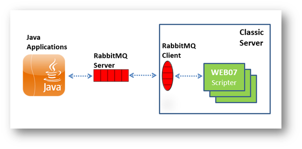

RabbitMQ
Degree Works uses RabbitMQ, a third-party open source message brokering software that implements the Advanced Message Queuing Protocol (AMQP), to communicate between processes running on the same or on different servers.
Two RabbitMQ software components must be installed for this communication to function:
RabbitMQ Server: installed on any server. For example, you can install it on the classic server or on one of your application servers or on a new server. It must be running at all times. For information on installing and using a RabbitMQ Server, please visit https://www.rabbitmq.com.
RabbitMQ Client: installed on the classic server; the Degree Works software makes calls into the RabbitMQ C library to communicate with the server.
The RabbitMQ software allows applications to communicate as shown in this diagram. The Java applications communicate with each other through the RabbitMQ server. They communicate with the classic daemons using both the RabbitMQ server and the RabbitMQ client to read from and write to the server.

By default, traffic between the RabbitMQ broker and our applications are not encrypted. If the traffic will travel on an unsecured network, you should consider encrypting it. See the Enable SSL/TLS for Degree Works and RabbitMQ section.
- classicConnector.amqp.channelCacheSize
- classicConnector.amqp.timeout
- core.amqp.broadcast.heartbeatSeconds
- core.amqp.broker.host
- core.amqp.broker.port
- core.amqp.password
- core.amqp.request.heartbeatSeconds
- core.amqp.request.timeoutSeconds
- core.amqp.useSsl
- core.amqp.username
- core.amqp.virtualHost
- classicConnector.amqp.exchange
- core.amqp.exchange.shpSettings
- core.amqp.exchange.transit
- core.amqp.exchange.ucx
Add a user to allow access to RabbitMQ
You must add the Degree Works RabbitMQ user with the rabbitmqctl script. This is the user and password defined in the core.amqp.username and core.amqp.password Shepherd settings, respectively.
About this task
For other useful commands, see the Manual Pages (man pages) at https://www.rabbitmq.com.
Procedure
Enable SSL/TLS for Degree Works and RabbitMQ
The default installation of RabbitMQ has SSL disabled and only TCP connections are used. However, you can configure Degree Works to communicate with RabbitMQ over SSL.
About this task
After the RabbitMQ server has been configured for SSL, enable SSL in RabbitMQ for Degree Works.
Procedure
Install the RabbitMQ Client for Degree Works
The RabbitMQ Client is a required component on the Degree Works classic server.
Before you begin
Before installing the RabbitMQ Client, you must first install CMake, if it is not already on your server. To check for CMake on your server, use the # which cmake command:
If you do not find it, then install it following the instructions in Install CMake on the classic server. If CMake is already installed, then proceed to Install the RabbitMQ Client on the classic server.
Install CMake on the classic server
If CMake is not already on your server, you must install it.
Before you begin
Procedure
Install the RabbitMQ Client on the classic server
After you install or verify installation of CMake on your server, you can install the RabbitMQ Client.
Before you begin
For information about downloading the RabbitMQ Client, see https://github.com/alanxz/rabbitmq-c. Do not download the master branch version. Be sure to select the version of RabbitMQ Client that your release of Degree Works supports. See Degree Works Installation.